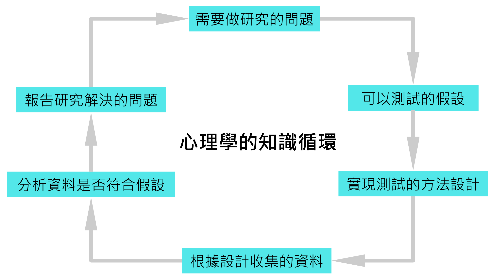

1 緒論
許多領域的心理學家運用心理學實驗掌握人類心智運作的原理，以及運用原理增益人類生活品質的訣竅。認知心理學家經由仔細設計的記憶實驗，了解人類記憶一長串項目最有效的方法(Eriksen & Eriksen, 1974)，以及複習曾學習內容的較佳安排(Greene, 1989)；社會心理學家藉由實驗確認社會助長的現象(Triplett, 1898)，以及促成個人服從權威的社會條件(Milgram, 1963)；神經心理學家結合認知作業與腦功能造影技術，掌握不同腦區處理認知作業的差別(Posner & Raichle, 1999)。諸如此類的實例，散見於各領域心理學教科書、科普傳播、還有你有機會閱讀的大量論文。
每個促進心理學知識進步的實驗，大多數改良已存在的實驗方法，經歷多次嘗試，才獲得令人信服的結果。如何規劃及執行有效可靠的實驗方法，分析收集的資料，判斷分析結果是否證實假設；吸收這個過程的經驗是心理學實驗法的學習目標。一項研究活動需要事先計畫與事後完整的報告，研究結果才能成為能為眾人運用的知識。科普傳播也是以完整報告為報導來源，了解實驗研究流程有助傳達正確資訊。本章從了解知識更新循環，認識心理學實驗的普遍流程。
1.1 理解科學思考與操作
理察．費曼曾於1974年在加州理工學院進行一場題目為「儀式型科學」(Cargo Cult science)的專題演講[Feynman (1974)]1，他舉出以下例子說明他希望聽眾深思的問題：
(第二次世界)大戰期間在南太平洋有一些土人，看到飛機降落在地面，卸下來一包包的好東西，其中一些是送給他們的。往後他們仍然希望能發生同樣的事，於是他們在同樣的地點鋪飛機跑道，兩旁還點上了火，蓋了間小茅屋，派人坐在那裡，頭上綁了兩塊木頭（假裝是耳機）、插了根竹子（假裝是天線），以為這就等於控制塔裡的領航員了──然後他們等待、等待飛機降落。…，他們每件事都做對了、一切都十分神似，看來跟戰時沒什麼兩樣；但這行不通：飛機始終沒有降落下來。…(他)們完全學足了科學研究的外表，一切都十分神似，但是事實上(他)們缺乏了最重要的部分──因為飛機始終沒有降落下來。
如果讀者是正在上課的學生及老師，建議一起閱讀這篇講稿並討論費曼在1960~70年代的見聞與今日的差異。想想為何只懂科學操作不代表通曉科學思考？這是本書標題有「開放科學取向」的原因，以物理學為首的科學領域在費曼做這次演講年代就有提倡開放科學的呼籲及行動，心理科學直到2011年之後才有大批學者集結加入開放科學的行列。我在介紹心理學知識如何更新的循環及真實案例之後，再來談我對這個問題的意見。
1.2 理想的心理學知識更新循環
各家心理學研究方法的課程及教材幾乎都會運用圖@ref(fig:ch01-fig01)的流程圖，開宗明義介紹心理學者準備研究計畫到完成報告的基本流程。我認為評估經過心理學專業教育的學生有沒有獲得基本專業能力，有個簡潔的方式是請學生提出能放入這個循環的知識主題，解釋這個主題如何發展演進為現在學習的樣貌。以實驗累進的知識，對於循環中的每一個要素，比其他研究方法有更嚴謹的要求，所以讀者需要先從實驗心理學的標準，解讀這張流程圖中的關鍵詞。
問題：能做研究的問題當然是屬於心理學的。不過這句話太過武斷，什麼是「屬於心理學的」？專業心理學家有一套判斷策略，首先是這個問題以我所知道的現有資訊，能否給出一個肯定的解答？如果沒有解答或者不只一種解答，我有沒有可運用的方法可找出解答，或者檢驗各種解答的肯定程度？可以進入更新循環的問題，必定無法從當前的資訊得到完整答案。例如開頭提到的複習課程安排，多數研究顯現語言學習的成效，如果用在其他能力的學習，例如訓練跑步耐力，安排與語言課相同節奏的複習課程，提昇的效率會不會一樣？至於能用實驗找到解答的問題，決定能不能放入循環的關鍵，是能不能運用隨機化方法取得支持或否證解答的證據。
假設：科學問題都能形成可測試的假設，實驗心理學當然也不例外。如同所有發展歷史長久的科學領域，實驗心理學的假設源自想驗證某種行為現象發生原因的問題意識，加上驗證原因的具體方法，研究者進而提出研究結果的預測。擁有這些要素的研究問題，在研究者心中大致已有找出解答的途徑，也就是測試證據的方法。好的科學假設能指出確認至少一種解答的方向，能以實驗檢驗的假設在研究者的想法裡，已經有一定的可信度。因為隨機化操作，心理學實驗的假設能以機率模型呈現，評估每種解答獲得正反面證據支持的機率。
設計：大部分心理學研究的測試單位是人類行為反應，透過眼動儀、腦電位紀錄儀、功能性核磁共振等儀器收集資料，測試單位就會是幾毫秒內的注視規跡、或者某個大腦區域的神經細腦活動。確認找出解答的方法與預測結果，專業心理學者就能預想在某種情況觀察特定行為反應的基本設計。心理學實驗要更進一步規劃，如何透過比較不同隨機化處置之間的行為反應，判斷證據的可信度。
資料：為了驗證假設而觀察的人類行為反應，必定需要經過編碼，才能轉換成可分析的資料。編碼方式取決於設計，已被心理學研究者廣泛使用的設計，都有建議的編碼方式。專業心理學者能配合正確的設計，給予行為反應正確編碼。
分析：在心理學實驗裡，假設描述的測試標準，是一套檢驗證據合理性的分析程序。經過編碼的資料，才能放入分析程序，輸出可供判斷的資訊。
歸納整套流程的說明，我們能開始了解運用科學程序累積的心理學知識有基本條件：首先是決定研究問題時，確定有可獲得證據的隨機化方法；設定的假設要包容任何可信的解答；研究設計能指引解讀資料分析的正確方式；由分析結果的判讀顯示最適合的解答。能獲得證據支持的解答可望成為廣泛傳播的知識，所以知識的品質取決於研究程序的每個環節，研究者能不能以最高標準自我要求，採取獲得最可信解答的行動。
1.3 現實的知識更新進程
2008年科學雜誌(Science)刊登一篇兩位耶魯大學社會心理學者的研究(Williams & Bargh, 2008)，運用社會心理學常運用的隱瞞措施，觀察參與者接觸溫度較高的物品之後，會不會傾向做出讓人感到窩心的行為。報告中的兩個實驗顯示進行實驗之前，拿著熱咖啡的參與者，與拿著冷咖啡的參與者相比，比較容易給問卷中描寫的陌生人形象正向評價；還有評估電熱包的價格，所有參與者事後皆獲得獎品。詢問獎品要送人或自用，拿到發熱電熱包的參與者，送人的比例高於自用，不過拿到未發熱電熱包的參與者，自用比例高於送人。
這項研究符合實驗研究法的兩個重要原則：隨機化分組、在限定觀察條件的情況紀錄參與者的行為反應。實驗結果看似支持兩位研究者的假設，有興趣的心理學者可以運用兩人的研究結果持續探究更多有趣的問題。根據Google Scholar的查詢資料，這份研究發表後，至今已被超過1200份論文引用。這代表有許多研究者擴展這兩位學者的問題與研究方法，累進物理溫度影響心理溫度的知識。
不過仔細探究其中的論文，有上百篇是質疑這項研究的可信度，例如第二個實驗分析兩組回答送人與自用的人數百分比，但是總人數只有53人。為什麼這是一個大問題？因為這樣的人數規模，透露2008年的這項研究結果可能只是這兩位研究者剛好收到符合預期的資料。其他嘗試重現原始研究結果的研究者，以同樣人數重新啟動實驗，不一定得到相同的發現，這就是所謂的低考驗力問題(under powered)。
Chopik et al. (2018) 提供一個大多數人比較容易理解的例子，說明低考驗力如何讓研究結果難以讓專業同行信服。這個例子的內容，我再根據台灣國情做些變化：設想我考慮在北部市區或南部鄉下買房子，首先不論地段收集待售的房屋資訊。還沒有進一步看資料前，我推測坪數相同的房子，北部市區的房價應該高於南部鄉下。抽出第一筆北部與第一筆南部的房子資訊，卻看到和預期相反的例子，不過之後數筆資訊都是符合預期。如果我的推測是正確的，要看多少筆房屋資訊才能確定？
如果我想找的固定坪數房屋，南部平均房價實際上高於北部的平均房價，但是我挑了十筆都是符合北部房價高於南部房價，做出北部高於南部的結論，就是製造出一筆低考驗力的研究結果。回到 Williams & Bargh (2008) 的研究， 他們很可能就是如此得到第一次發現，在他們的報告發表八年後， Lynott et al. (2014) 徵求861位參與者，試圖重現第二個研究，結果發現發熱的電熱包並未明顯促進送人禮品的行為。自此之後，任何與原始研究一樣的正面報告，很難說經得起更嚴謹的研究檢驗。
1.4 如何培養科學思考及操作
前一節的案例說明熟練的研究操作，並不代表研究結果是充分的科學思考產物。科學研究人員本身要具備智性品德的觀念與實踐方式，然而 Williams & Bargh (2008) 的案例體現缺乏其中一種品德造成的問題：科學研究的誠信(scientific integrity)。他們的研究結果一開始讓學界相信確實存在這樣的效應，後續的研究卻並未得到一致的結果；不過2011年之後，心理科學界才開始體認這樣的問題。理察．費曼在1974年的演講就呼籲一種普遍的誠信原則：科學研究人員需要時常自我反省有沒有充份保證研究操作能帶來正確的認識。要實踐這樣的誠信原則，保持研究過程及資料的開放透明，讓同行研究者確認能否再現相同結果，才能真正評估有原創性的研究結果，的確能累積經得起考驗的科學知識。
認識與避免會製造不良的研究結果的操作，是養成品德觀念的第一步，讀者可參考附錄 獲得相關資訊。然而養成並實踐品德觀念是無法透過明文的行為規範達成，規範只能達到最起碼的提醒用意。如果研究者個人缺乏實踐的意識，還有身邊經常接觸的人士經常做出有違誠信的研究行為，無法期盼研究者提出的研究結果，是能啓發人類認識世界真像的產物。因此本書設計提供營造情境學習(situated learning)輔助工具與研究案例，搭配個人建議，讓運用本書的學生與老師能形成科學思考的實踐共同體(Community of Practice)。
1.5 學習讓知識持續循環的研究方法
最後，我們再來複習一次知識循環，想想關鍵詞字面下值得咀嚼的深意，認真的心理科學家每走一次研究過程，都會對每個步驟能否增進可靠知識的累積有更深刻的體會。還沒有完整研究經驗的同學讀者，可當成踏上學習道路前的建議：
以過程到結果完全公開的理念，準備與執行研究計畫 研究不是報告通過評審，成功發表就結束。更是指引未來的研究者以這次的基礎，繼續確認解答的正確性，發掘探討問題的新角度，還有找出更值得研究的問題。最理想的報告是讓讀者能「一鍵還原」：也就是任何有研究資源的讀者，能運用公開資料重新啟動研究，或者驗證報告之中的統計資訊。當你以這樣的想法進行一項研究，必然產生精益求精的動機。
設定是實驗的研究，把握隨機化措施，以及非操作及測量變項的控制 任何心理學家能運用的研究方法都可以套用知識循環，了解學習的重點。對於採用實驗法的研究案來說，當轉化為可預測的假設時，研究者必須確定要採用的隨機化措施，能使觀察對象在測量變項顯現(或者不顯現)預測的差異。所以開始收集資料之前，解釋研究結果的變項結構已經確定。任何於收集資料完成後，才要進一步解釋或分析的非事先設定變項，都會降低報告的可信度。
確定變項結構，立刻預演分析方法 因為實驗的變項結構在設計完成後，除非無法抗拒的意外，分析方法的工序應該準備就緒。好幾個世代之前，實驗心理學家常常在實驗之前的會進行前置研究(pilot study)，本書主張前置研究的主要功能是確定資料收集程序符合計畫，還有確認分析方法能正確執行。如果因此發現實驗設計不可行，應該回到問題到假設的過程重新評估。
動手操作驗證文獻紀錄 經過完整重現本書示範的實驗研究之後，請將這段學習經驗代入未來你所接觸的任何實驗研究文獻，想想你能不能運用文獻報告及作者公開的資料重啟研究過程。能動手操作的部分，包括分析公開資料，要儘量放手去嘗試，親自檢驗文獻作者的假設與結論一致性，才能轉化為自已能運用的知識。
天下文化出版《別鬧了，費曼先生》收錄講稿中文譯本，原翻譯標題「草包族科學」。由於原標題隱含種族歧視之意，本書更改標題符合討論脈絡。↩︎